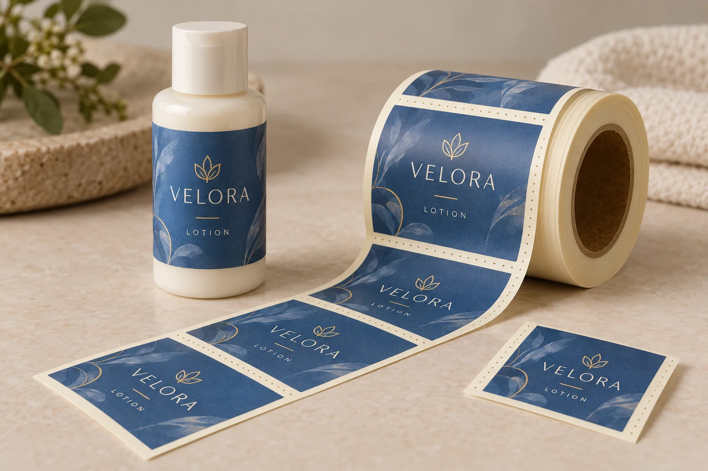
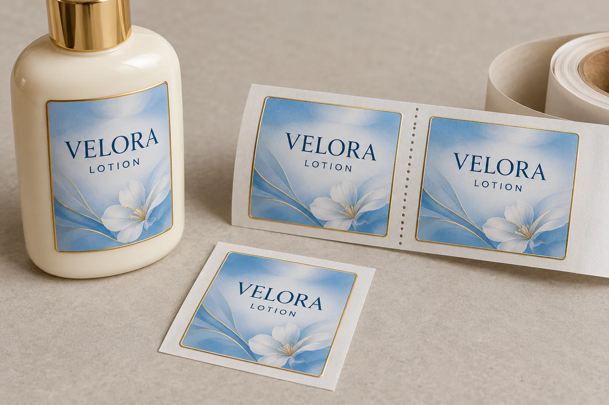

If a sampling team needs to hand out individual cosmetic labels while keeping the adhesive covered, a roll can be awkward to divide. A perforation in the backing between labels may help separate short sections. Before adding it to the order, decide whether people need a label-on-backing unit or simply an easier way to peel a label for immediate application.
Those are different tasks. A perforated liner is a deliberate construction choice that the converter and receiving operation must review. Specify what should separate, where the separation should occur, and which process still needs a continuous web. Approve a representative sample before extending the arrangement to an entire production order.

Describe the job before requesting a perforation
Consider a brand assembling presentation kits at a table. The team might need one printed label, still protected on backing, for each kit. Separating the liner could serve that task. A different team might be applying labels directly to bottles at the same table. It may need convenient peeling rather than individual backed pieces. These are hypothetical workflows, not reports of a particular customer's operation.
Ask the person doing the work to demonstrate the sequence with the current supply. Does the operator tear off a unit, peel it immediately, store it, or pass it to someone else? What protects the adhesive until application? Record where waste accumulates and whether the unit must retain a job or version reference. Do not add an extra finishing operation until its purpose is clear.
Define the delivery boundary using the label and backing boundary guide. A kiss cut defining the sticker shape is not an instruction to perforate the backing between stickers. Similarly, an intended perforation should be identifiable so it is not confused with unexpected damage investigated under the liner cut damage review.
Compare three ways to supply the work
| Supply choice | Task it may serve | Question to resolve |
|---|---|---|
| Continuous backing | Peeling and applying at one workstation or feeding an approved applicator | Can the actual handling method dispense the label comfortably? |
| Backing perforated between labels | Separating label-on-backing units or short sections before use | Does the section separate cleanly while surviving its prior handling? |
| Separately supplied backed units or sheets | Issuing fixed units where roll handling adds little value | How will pieces be counted, identified, protected and priced? |
Request quotations for the alternatives on the same quantity and artwork basis. Include finishing, packing and receiving work where known. A cheaper printed-label unit does not establish a lower project cost if it changes how the team must divide and identify the supply. Equally, a perforation adds little value when the labels will be peeled directly from an accepted continuous roll.
Ask the converter to design the separation
Avery Dennison's technical bulletin describes perforation behaviour in terms of the cuts, the uncut ties, substrate properties and resistance to separation. Its examples include paper liners perforated between labels. The practical takeaway is to specify the required handling outcome and have the converter propose an appropriate construction; the number of visible holes alone does not define an approved result.
Do not copy a tooth count from a generic chart into a purchase order as a universal recipe. Identify the proposed liner material and thickness reference, position of the perforation, orientation and repeat. Ask for a drawing showing the intact label boundary, the gap and the deliberate backing separation. If the design crosses artwork or a label face, that is a different request and needs explicit review.
Confirm whether any printer, dispenser or applicator will handle the web before it is divided. Send its operating requirements to the converter and ask the equipment operator to review the proposal. The general roll handoff checklist still applies to core, winding, web and delivery format. Do not assume a perforated roll can replace an already accepted continuous roll on a machine.

Use a sample review that matches the handling sequence
- Identify the sample. Record artwork, label dimensions, liner reference, converter proposal and the intended number of labels in each separated section.
- Try normal handling first. Unpack and move the proposed supply using the actual work method. Record any separation occurring before the operator intends it. This is an observation, not an automatic diagnosis of a manufacturing cause.
- Perform the intended separation. Have the receiving team divide the section at the agreed position. Check that the printed label remains intact and protected on its own backing, and that adjacent pieces remain usable.
- Complete the task. Put the backed unit into its intended kit or queue, then peel and apply it at the relevant stage. Record whether identification or handling becomes confusing after division.
- Review equipment use separately. If the roll passes through equipment, obtain the operator's method-specific acceptance before a production release. A hand tear at a desk does not establish machine behaviour.
Agree the sample scope and acceptance criteria with the converter and the receiving team. Do not infer a production yield from a few desk samples. If the web divides during ordinary handling, the adjacent label becomes exposed, or the operation cannot use the proposal, keep that finishing choice open and compare the alternative supply format.
Make the decision traceable
| Input | Record | Use it to decide |
|---|---|---|
| Receiving task | Who separates, stores and applies each piece; labels per section | Whether a perforation solves the right handling problem |
| Proposed construction | Liner identity, marked drawing and converter revision | Whether the quoted item matches the sample |
| Observed sequence | Unpacking, ordinary movement, intended tear and subsequent use | Whether the method warrants acceptance or revision |
| Equipment | Equipment reference, operating review and unresolved conditions | Whether production feeding remains an open decision |
| Release | Accepted sample, scope, date and responsible contacts | Which supply arrangement may proceed |
For custom cosmetic label enquiries, provide the artwork, quantities by design, intended handling sequence and a sketch showing where the backing should separate. Ask whether the proposed finishing is available for the actual construction and what sample is needed. Use the inquiry form to prepare a message; send drawings and files separately by email or WhatsApp.
Technical reference: Avery Dennison, Perforations Technical Overview (2016). This general bulletin supports the construction questions above; it does not approve a particular cosmetic label or equipment setup.